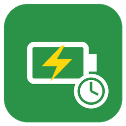

ChargePlannerPlanification intelligente de la charge des véhicules électriques. Le plugin choisit, voiture par voiture, si la borne doit charger à fond (mode Normal) ou rester en Eco pour profiter du surplus solaire. Il ne touche ni aux ampères ni aux limites du compteur : votre scénario de pilotage existant continue de gérer la puissance.
Plugins → Gestion des plugins → ChargePlanner.
ChargePlanner (« passerait la borne en Normal… »). Désactivez-le quand le comportement vous convient.| Champ | Exemple (plugin myWallBox + virtuel de mode) |
|---|---|
| Mode actuel (info) | #[Maison][Wallbox 01 - Mode][Mode]# |
| Passer en Normal / Eco (actions) | #[Maison][Wallbox 01 - Mode][Normal]#, …[Eco]# |
| Statut ID (info) | #[Maison][Wallbox01][Statut ID]# |
| Énergie de la session (info, kWh) | #[Maison][Wallbox01][Énergie consommée]# (optionnel) |
#[Garage][E208 GT][Batterie]# du plugin Stellantis Connect).Jusqu'à 4 objectifs par voiture : « la voiture doit avoir au moins X % tel jour à telle heure ». Exemple : vendredi 00:00 → 50 %, dimanche 22:00 → 100 %.
Toutes les 5 minutes, le plugin calcule l'énergie qui manque (pertes comprises), la durée de charge à la puissance indiquée plus la marge, et l'heure de départ au plus tard. Avant, la borne reste en Eco ; à l'heure dite, elle passe en Normal, puis revient en Eco une fois l'objectif atteint.
Exemple : batterie de 52 kWh à 50 %, objectif 100 % dimanche 22h → il manque 26 kWh, soit environ 28,9 kWh tirés du réseau, 4 h de charge à 7,2 kW + 30 min de marge → départ vers 17h15. Si le solaire a déjà amené la voiture à 80 % dans l'après-midi, le départ glisse à 19h45.
Compléter de préférence en jour creux : si un jour plein précède l'échéance (ex. jeudi avant un objectif vendredi 0h), la charge manquante est placée sur le dernier jour creux (mercredi soir). S'il ne reste pas assez d'heures creuses, le complément se fait au plus tard en heure pleine.
| Commande | Rôle |
|---|---|
| Décision | Normal ou Eco |
| Raison | Explication en clair de la décision |
| Prochain objectif / Départ prévu | Ex. « dim. 22h00 → 100 % » / « 17h15 » |
| Batterie estimée | % du constructeur, complété par l'énergie comptée par la borne |
| Boost / État boost | Aucun, Programmé mer. 0h05, En cours |
| Borne du jour / Choisir la borne | Pour les jours où les voitures sont inversées |
| Pilotage ON / OFF | Suspend le pilotage d'une voiture sans désactiver l'équipement |